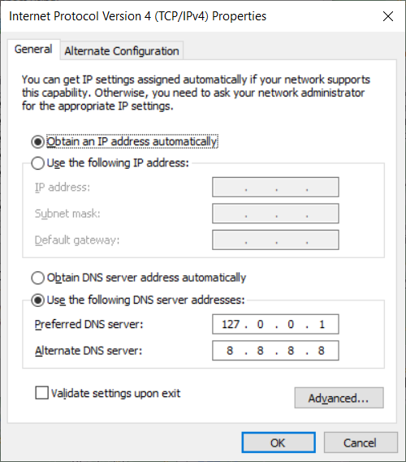

Automatic DNS Resolution
In order to allow automatic DNS resolution using the provided dnsmasq service we will need to make sure DNS request are routed through our local network. This requires some configuration.
Configuration per network
Mac
On Mac OS, DNS resolution is configured automatically for *.test domains using a feature Mac OS inherits from BSD. When warden install is run (or warden svc up for the first time) the following contents are placed in the /etc/resolver/test file. This has the effect of having zero impact on DNS queries except for those under the .test TLD.
nameserver 127.0.0.1
If you desire to have more than this route through the dnsmasq container, you could place another similar file in the /etc/resolver/ directory on a per-TLD basis, or alternatively configure all DNS lookups to pass through the dnsmasq container. To do this, open up Advanced connection settings for the WiFi/LAN settings in System Preferences, and go to the DNS tab. In here press the “+” button to add a new DNS record with the following IP address: 127.0.0.1 followed by fallback records:
127.0.0.1
1.1.1.1
1.0.0.1
systemd-resolved
This approach works on most modern (systemd based) operating systems.
systemd-resolved can be configured to forward the requests of .test TLD to another DNS server. The configuration file is typically located at /etc/systemd/resolved.conf and /etc/systemd/resolved.conf.d/*.conf. Run the following commands to configure systemd-resolved:
sudo mkdir -p /etc/systemd/resolved.conf.d
echo -e "[Resolve]\nDNS=127.0.0.1\nDomains=~test\n" \
| sudo tee /etc/systemd/resolved.conf.d/warden.conf > /dev/null
sudo systemctl restart systemd-resolved
Ubuntu resolvconf
Use the resolvconf service to add a permanent entry in your /etc/resolv.conf file.
Install resolvconf
sudo apt update && sudo apt install resolvconf
Edit the /etc/resolvconf/resolv.conf.d/base file as follows:
search home net
nameserver 127.0.0.1
nameserver 1.1.1.1
nameserver 1.0.0.1
Restart network-manager
sudo service network-manager restart
Note
In the above examples you can replace 1.1.1.1 and 1.0.0.1 (CloudFlare) with the IP of your own preferred DNS resolution service such as 8.8.8.8 and 8.8.4.4 (Google) or 9.9.9.9 and 149.112.112.112 (Quad9)
Windows
Add the local dnsmasq resolver as the first DNS server:
